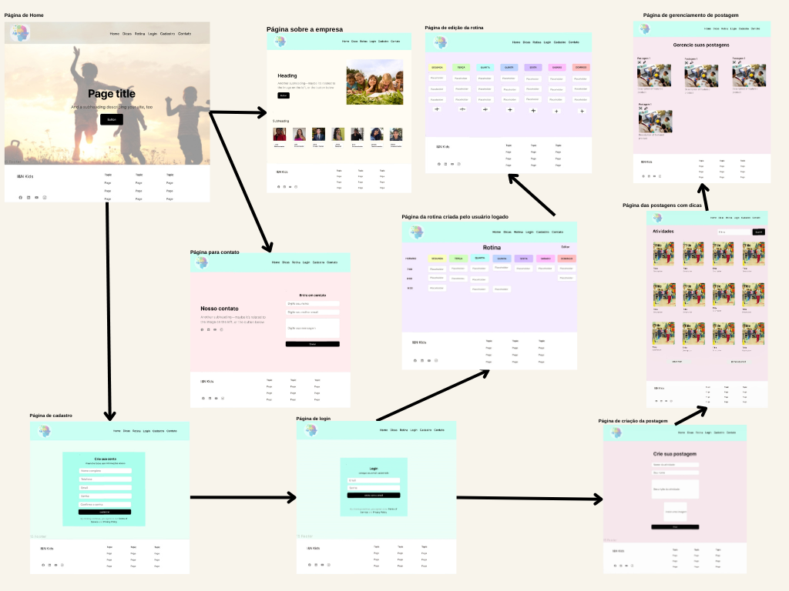
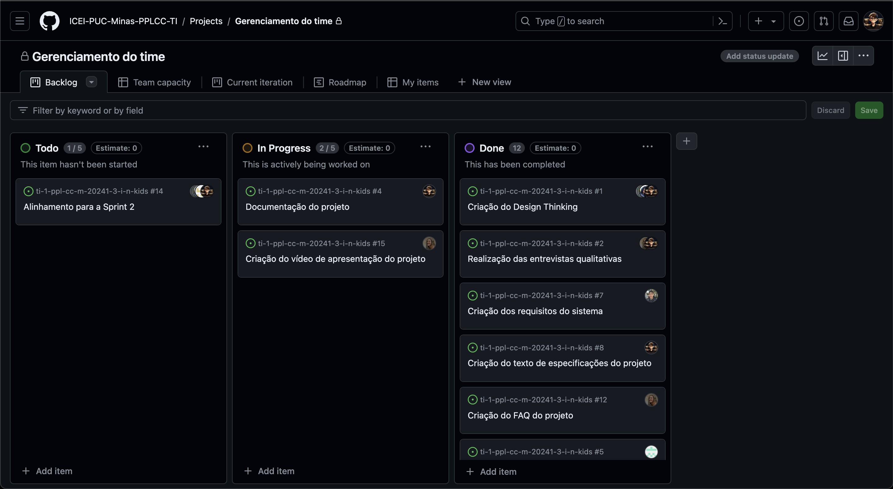

Introdução
Informações básicas do projeto como nome e membros da equipe.
Informações Gerais
- Projeto: I&N KIDS
- Repositório do GitHub: Repositório da I&N KIDS
- Membros da equipe:
Contexto
Detalhes sobre o espaço de problema, justificativas e os objetivos do projeto.
Problema
Muitos pais enfrentam dificuldades para equilibrar o tempo que seus filhos passam em frente às telas com atividades
ao ar livre e momentos de qualidade em família. O crescente uso de dispositivos eletrônicos e jogos online tem levado
as crianças a ficarem cada vez mais sedentárias e dependentes dessas tecnologias, o que pode prejudicar seu desenvolvimento
físico, emocional e social.
Ao mesmo tempo, os pais desejam proporcionar experiências enriquecedoras e saudáveis para seus filhos, mas muitas vezes
se deparam com a falta de informações relevantes e direcionadas. A ausência de um guia abrangente e centralizado que
ofereça sugestões de atividades ao ar livre, dicas práticas para reduzir o tempo de tela e orientações para criar
momentos significativos em família aumenta a sensação de sobrecarga e incerteza.
Dessa forma, a dificuldade em encontrar recursos confiáveis que ajudem os pais a equilibrar o tempo das crianças nas
telas com atividades lúdicas que favoreçam uma formação mais saudável das crianças e que aumentem o tempo de qualidade em família
são os principais objetivos a serem sanados.
Objetivos
O principal foco deste projeto é desenvolver um software que solucione o problema enfrentado pelos pais em
equilibrar o tempo de seus filhos entre telas e atividades recreativas, além de promover momentos de
qualidade em família.
A plataforma concentra seus esforços nas seguintes questões:
Centralização de informações relevantes: Concentrar informações úteis para os pais em um único lugar, oferecendo
orientações sobre como equilibrar o tempo de tela das crianças, sugerindo atividades ao ar livre e promovendo momentos
significativos em família.
Otimização da organização das rotinas familiares: Desenvolver ferramentas que auxiliem os pais na organização e
planejamento de suas rotinas familiares. Isso incluirá a criação de cronogramas adaptáveis que permitam a inclusão
de tempo para atividades ao ar livre, momentos de qualidade em família e redução do tempo de tela das crianças.
Esses objetivos específicos irão direcionar o desenvolvimento da plataforma, visando fornecer soluções práticas e eficazes para
os desafios enfrentados pelos pais na criação de um ambiente equilibrado para seus filhos.
Justificativa
A decisão de desenvolver um software para auxiliar os pais na gestão do tempo de tela das crianças e na promoção de
atividades lúdicas em família foi baseada na necessidade evidente de equilibrar o uso de dispositivos eletrônicos com
momentos de qualidade. A partir de entrevistas feitas pelos componentes do grupo e também pesquisas realizadas em artigos
e vídeos (os dados estão disponíveis no Design Thinking e também nas referências bibliográficas deste documento), é
possível destacar os impactos negativos do uso excessivo de telas na saúde e no desenvolvimento das crianças, reforçando
a importância de promover atividades mais saudáveis e interativas.
Uma plataforma centralizada pode contribuir para sanar essa dificuldade, fornecendo orientações práticas e apoio aos
pais, enquanto facilita a organização da rotina familiar, permitindo que eles dediquem mais tempo de qualidade com
seus filhos. Promover atividades em família não só fortalece os laços afetivos, mas também contribui para o bem-estar
emocional de todos os membros da família, tornando essa iniciativa fundamental para fortalecer as relações familiares
e aumentar a felicidade geral.
Público-alvo
Nosso público-alvo abrange uma ampla série de pessoas interessadas em promover o desenvolvimento saudável das crianças,
incluindo pais, responsáveis, educadores, psicólogos e outros profissionais ligados à educação infantil. Identificamos
diferentes perfis:
Pessoas preocupadas com o tempo de tela: pais e responsáveis preocupados com o tempo excessivo que as
crianças passam em frente às telas e que buscam soluções eficazes para limitar esse tempo.
Pais ocupados: famílias com agendas lotadas que enfrentam desafios para organizar atividades fora do
ambiente digital. Valorizam soluções apropriadas e de fácil acesso.
Responsáveis em busca de orientação: indivíduos interessados em receber orientações sobre como promover
atividades recreativas e momentos de qualidade em família, mesmo tendo pouco conhecimento prévio sobre o assunto.
Famílias multigeracionais: incluem membros de diferentes idades, como avós, que também participam da
criação e cuidado das crianças.
A maioria dos usuários possui alguma experiência básica com tecnologia, como navegar na internet e usar aplicativos em
smartphones ou tablets. A aplicação será intuitiva e de fácil acesso, atendendo também aos usuários com menos experiência tecnológica.
Concepção (Design Thinking)
Detalhes do processo de discovery do projeto.
Apresente o processo de discovery do projeto. Com foco na experiência do usuário, esse processo abrange a compreensão do contexto do problema e das características do usuário, a definição do problema, a geração de ideias, a prototipagem e a elaboração de uma proposta de solução
Processo de Design Thinking
O arquivo que se segue apresenta o resultado desse processo.
Apresente o processo de Design Thinking realizado pelo grupo e documentado por meio do software Miro. No documento apresentado, devem ser incluídos: (1) a matriz CSD, (2) o mapa de stakeholders, (3) as personas, (4) as respectivas propostas de valor e (5) o processo de ideação identificando as ideias levantadas e sua priorização.
Especificações do Projeto
Documentação das especificações do projeto.
Apresente as especificações do projeto, incluindo as histórias de usuário e os requisitos funcionais e não funcionais.
Histórias de Usuários
Com base na análise das personas foram identificadas as seguintes histórias de usuários:
Apresente aqui as histórias de usuário que são relevantes para o projeto de sua solução. As Histórias de Usuário consistem em uma ferramenta poderosa para a compreensão e elicitação dos requisitos funcionais e não funcionais da sua aplicação. Se possível, agrupe as histórias de usuário por contexto, para facilitar consultas recorrentes à essa parte do documento.
| EU COMO... | QUERO/PRECISO... | PARA... |
|---|---|---|
| Responsável pela criança | Criar cronograma de horários e visualizar dicas de atividades lúdicas | Diminuir o tempo que meu filho(a) passa em aparelhos eletrônicos |
| Profissional ligado à educação infantil | Divulgar dicas e atividades lúdicas para realizar com as crianças | Contribuir na diminuição do tempo que elas passam nos aparelhos eletrônicos |
Requisitos
As tabelas que se seguem apresentam os requisitos funcionais e não funcionais que detalham o escopo do projeto.
Com base nas Histórias de Usuário, enumere os requisitos da sua solução. Classifique esses requisitos em dois grupos:
- Requisitos Funcionais (RF): correspondem a uma funcionalidade que deve estar presente na plataforma (ex: cadastro de usuário).
- Requisitos Não Funcionais (RNF): correspondem a uma característica técnica, seja de usabilidade, desempenho, confiabilidade, segurança ou outro (ex: suporte a dispositivos iOS e Android).
Lembre-se que cada requisito deve corresponder à uma e somente uma característica alvo da sua solução. Além disso, certifique-se de que todos os aspectos capturados nas Histórias de Usuário foram cobertos.
Requisitos Funcionais
| ID | Descrição do Requisito | Prioridade |
|---|---|---|
| RF-001 | O sistema deve permitir o cadastro de usuário | ALTA |
| RF-002 | O sistema deve permitir o login de usuários cadastrados | ALTA |
| RF-003 | O sistema deve permitir a atualização dos dados de um usuário cadastrado | MÉDIA |
| RF-004 | O sistema deve permitir a exclusão de usuários cadastrados | MÉDIA |
| RF-005 | O sistema deve permitir a criação de postagens por um usuário cadastrado | ALTA |
| RF-006 | O sistema deve permitir a atualização dos dados das postagens criadas por um usuário cadastrado | MÉDIA |
| RF-007 | O sistema deve permitir a exclusão das postagens criadas por um usuário cadastrado | MÉDIA |
| RF-008 | O sistema deve permitir a exibição de todas as postagens cadastradas | ALTA |
| RF-009 | O sistema deve permitir a filtragem das postagens cadastradas por nome | BAIXA |
| RF-010 | O sistema deve permitir contactar os desenvolvedores do processo | BAIXA |
| RF-011 | O sistema deve permitir que o usuário cadastrado monte a rotina do seu filho | ALTA |
| RF-012 | O sistema deve permitir a criação das tarefas da rotina pelo usuário cadastrado | ALTA |
| RF-013 | O sistema deve permitir a atualização das tarefas da rotina criada pelo usuário cadastrado | MÉDIA |
| RF-014 | O sistema deve permitir a exclusão das tarefas da rotina criada pelo usuário cadastrado | MÉDIA |
| RF-015 | O sistema deve permitir a filtragem das tarefas da rotina pelo nome | BAIXA |
| RF-016 | O sistema deve permitir a visualização de informações sobre a empresa | BAIXA |
| RF-017 | O sistema deve permitir que o usuário navegue facilmente entre as telas através de um menu | ALTA |
| RF-018 | O sistema deve permitir que os usuários autenticados acessem apenas suas informações cadastradas | MÉDIA |
| RF-019 | O sistema deve permitir que os usuários cadastrados recebam notificações por e-mail quando uma nova atividade for cadastrada | BAIXA |
| RF-020 | O sistema deve fornecer um botão de "Voltar ao topo" em todas as páginas para facilitar a navegação do usuário | BAIXA |
Requisitos Não-Funcionais
| ID | Descrição do Requisito | Prioridade |
|---|---|---|
| RNF-001 | O sistema deve ser responsivo, adequando a diversos tamanhos de telas | ALTA |
| RNF-002 | O sistema deve ser compatível com diversos navegadores | MÉDIA |
| RNF-003 | O sistema deve ser acessível para diversos perfis de usuários (permitindo que pessoas com deficiências possam ter acesso) | ALTA |
| RNF-004 | O sistema deve ter um SEO que facilite a busca da página na web | BAIXA |
| RNF-005 | O sistema deve conter uma boa consistência visual | MÉDIA |
| RNF-006 | O sistema deve possuir uma navegação de fácil acesso, aumentando a inclusão diversas de faixas etárias | ALTA |
| RNF-007 | O sistema deve ser otimizado, facilitando o carregamento da página | MÉDIA |
| RNF-008 | O sistema deve ser modular, com facilidade de manter e atualizar o código | ALTA |
Projeto de Interface
Artefatos relacionados com a interface e a interacão do usuário na proposta de solução.
Apresente a ideia de interface que está sendo prevista para o projeto. Inclua os wireframes, o user/screen flow e o protótipo interativo.
User/Screen Flow e Protótipo interativo
Artefatos relacionados com a interface e a interacão do usuário na solução proposta.
O fluxo de usuário (User Flow) é uma técnica que permite ao desenvolvedor mapear todo fluxo de telas do site ou app. Essa técnica funciona para alinhar os caminhos e as possíveis ações que o usuário pode fazer junto com os membros de sua equipe. 
Um protótipo interativo apresenta o projeto de interfaces e permite ao usuário navegar pelas funcionalidades como se estivesse lidando com o software pronto. Veja o exemplo a seguir.
User Flow
Protótipo interativo
Acesse o protótipo interativo da I&N KIDS clicando aqui ou navegue no Mockup abaixo.
Wireframes
Protótipo de telas do sistema em baixa fidelidade (rascunhos).
Os Wireframes são protótipos das telas da aplicação usados em design de interface para sugerir a estrutura de um site web e seu relacionamentos entre suas páginas. Um wireframe web é uma ilustração semelhante ao layout de elementos fundamentais na interface. 
Metodologia
Detalhes sobre a organização do grupo e o ferramental empregado.
Nesta parte do documento, você deve apresentar a metodologia adotada pelo grupo, descrevendo o processo de trabalho baseado nas metodologias ágeis, a divisão de papéis e tarefas, as ferramentas empregadas e como foi realizada agestão de configuração do projeto via GitHub.
Coloque detalhes sobre o processo de Design Thinking e a implementação do Framework Scrum seguido pelo grupo. O grupo poderá fazer uso de ferramentas on-line para acompanhar o andamento do projeto, a execução das tarefas e o status de desenvolvimento da solução.
Ferramentas
Relação de ferramentas empregadas pelo grupo durante o projeto.
Liste as ferramentas empregadas no desenvolvimento do projeto, justificando a escolha delas, sempre que possível. Inclua itens como: (1) Editor de código, ferramentas de comunicação, ferramentas de diagramação, plataformas de hospedagem, entre outras.
| Ambiente | Plataforma | Justificativa | Link de Acesso |
|---|---|---|---|
| Elaboração do fluxo de perguntas para a entrevista | Miro | O Miro permite colaboração visual e estruturação de ideias para facilitar o processo | https://miro.com/app/board/uXjVKWCUtpI= |
| Repositório de código | GitHub | O GitHub oferece controle de versão e colaboração eficiente para o desenvolvimento de código | https://github.com/ICEI-PUC-Minas-PPLCC-TI/ti-1-ppl-cc-m-20241-3-i-n-kids |
| Hospedagem do site | Vercel | A Vercel oferece hospedagem gratuita com excelente desempenho para sites | https://ien-kids.vercel.app |
| Protótipagem do site | Figma | O Figma oferece prototipagem de sites com ótimas funcionalidades, desempenho e é gratuito |
Wireframe: https://encurtador.com.br/dfpQR Mockup: https://encurtador.com.br/lxGO8 |
| Processo de Design Thinking, Logotipo do site e User Flow | Canva | O Figma oferece prototipagem de sites com ótimas funcionalidades, desempenho e é gratuito |
Processo de Design Thinking: https://encurtador.com.br/qtINO Logotipo da I&N KIDS: https://encurtador.com.br/etBL1 User Flow: https://encurtador.com.br/msHNO |
| Codificação do projeto | Visual Studio Code | O VS Code é um editor de código leve, altamente personalizável e repleto de recursos que aumentam a produtividade dos desenvolvedores. |
Wireframe: https://encurtador.com.br/dfpQR Mockup: https://encurtador.com.br/lxGO8 |
Gestão do Projeto
Divisão de papéis no grupo e apresentação da estrutura da ferramenta de controle de tarefas (Kanban).
Apresente a divisão de papéis e tarefas entre os membros do grupo. Informe quem é o Scrum Master, o Product Owner e os desenvolvedores. Informe também quem é o responsável pela documentação do projeto.
Apresente o quadro de gerenciamento do time (Kanban), seu formato e as experiências na utilização dessa ferramenta (GitHub Projects)
O grupo da I&N KIDS é composto por sete (7) membros distribuídos da seguinte forma:
Scrum Master: Julia Rodrigues Cronenberger
Product Owner: Artur Bomtempo Colen
Desenvolvedores:
- Artur Bomtempo Colen;
- Daniella Emily Cornelio da Silva;
- Davi Gonçalves Ayres Lanna;
- Leticia Paulinelli Costa Marini;
- Lucas Alves Berão;
- Pedro Henrique Félix Dos Santos
O principal responsável pela documentação do projeto foi Artur Bomtempo. Assim, além de escrever parte do conteúdo presente neste documento, também foi responsável por receber e compilar neste arquivo (TIDocs) partes da documentação escritas por Julia Cronenberger, Pedro Félix e Letícia Paulinelli.
Para dividir as tarefas do projeto I&N KIDS, estamos utilizando a metodologia Kanban através da plataforma GitHub Projects. O quadro de gerenciamento está estruturado em colunas para "A Fazer", "Em Andamento" e "Feito". Esta ferramenta tem sido uma ótima experiência, facilitando bastante a organização geral do grupo e nossas estratégias para alcançar nosso objetivo principal de finalizar o software no tempo estimado.
Controle de Versão
Estrutura do fluxo de trabalho no ambiente do GitHub.
Discuta como a configuração do projeto foi feita na ferramenta de versionamento (GitHub). Exponha como a gerência de tags, merges, commits e branchs é realizada. Discuta como a gerência de issues foi realizada.

A configuração do projeto foi feita através da ferramenta de versionamento GitHub, onde o projeto está dividido por diversas branches (ramificações) para organizar melhor o código e o processo de desenvolvimento.
Dessa forma, há nove (9) branches no projeto: uma para cada um dos sete desenvolvedores, permitindo que eles realizem suas tarefas separadamente e adicionem recursos à aplicação sem afetar o projeto em produção. Além disso, há uma branch chamada "homologação", criada para consolidar as funcionalidades desenvolvidas sem afetar o software em produção e também para realizar os testes, e a branch "master", responsável por armazenar o código do site em produção. A branch "master" só deve ser alterada após mesclar os novos recursos na branch de homologação e realizar os devidos testes.
Em relação aos commits, cada desenvolvedor deve incrementar os recursos em sua própria branch e, após a finalização, informar ao Scrum Master e ao Product Owner. Eles, por sua vez, realizarão o merge na branch de homologação e os devidos testes. Esse fluxo deve ser seguido rigorosamente para evitar o risco de "quebrar a aplicação" em produção.
Para organizar as tarefas na ferramenta de gestão GitHub Projects, foram criadas issues correspondentes a cada tarefa, cada uma com suas tags de classificação de acordo com o tipo de tarefa (desenvolvimento, design, documentação, entre outras). Após uma tarefa ser finalizada e testada, é responsabilidade do Product Owner mover a tarefa para seu respectivo "status" no Kanban.
Solução
Esta seção apresenta todos os detalhes da solução criada no projeto.
Apresente cada uma das funcionalidades que a aplicação fornece tanto para os usuários quanto aos administradores da solução.
Inclua, para cada funcionalidade, itens como: (1) titulos e descrição da funcionalidade; (2) Estrutura de dados associada; (3) o detalhe sobre as instruções de acesso e uso.
Video do Projeto
O vídeo a seguir traz uma apresentação do problema que a equipe está tratando e a proposta de solução.
O video de apresentação é voltado para que o público externo possa conhecer a solução. O formato é livre, sendo importante que seja apresentado o problema e a solução numa linguagem descomplicada e direta.
Utilize o recurso de compartilhamento via embed e inclua o vídeo logo abaixo.
Funcionalidades
Esta seção apresenta as funcionalidades da solução.
Apresente cada uma das funcionalidades que a aplicação fornece tanto para os usuários quanto aos administradores da solução.
Inclua, para cada funcionalidade, itens como: (1) titulos e descrição da funcionalidade; (2) Estrutura de dados associada; (3) o detalhe sobre as instruções de acesso e uso.
Funcionalidade 1 - Cadastro de ContatosEXEMPLO
Permite a inclusão, leitura, alteração e exclusão de contatos para o sistema
- Estrutura de dados: Contatos
- Instruções de acesso:
- Abra o site e efetue o login
- Acesse o menu principal e escolha a opção Cadastros
- Em seguida, escolha a opção Contatos

Estruturas de Dados
Descrição das estruturas de dados utilizadas na solução com exemplos no formato JSON.
Apresente as estruturas de dados utilizadas na solução tanto para dados utilizados na essência da aplicação quanto outras estruturas que foram criadas para algum tipo de configuração
Nomeie a estrutura, coloque uma descrição sucinta e apresente um exemplo em formato JSON.
Estrutura de Dados - ContatosEXEMPLO
Contatos da aplicação
{
"id": 1,
"nome": "Leanne Graham",
"cidade": "Belo Horizonte",
"categoria": "amigos",
"email": "Sincere@april.biz",
"telefone": "1-770-736-8031",
"website": "hildegard.org"
}
Estrutura de Dados - UsuáriosEXEMPLO
Registro dos usuários do sistema utilizados para login e para o perfil do sistema
{
id: "eed55b91-45be-4f2c-81bc-7686135503f9"
email: "admin@abc.com"
id: "eed55b91-45be-4f2c-81bc-7686135503f9"
login: "admin"
nome: "Administrador do Sistema"
senha: "123"
}
Módulos e APIs
Esta seção apresenta os módulos e APIs utilizados na solução.
Apresente os módulos e APIs utilizados no desenvolvimento da solução. Inclua itens como: (1) Frameworks, bibliotecas, módulos, etc. utilizados no desenvolvimento da solução; (2) APIs utilizadas para acesso a dados, serviços, etc.
Images:
- Unsplash - https://unsplash.com/EXEMPLO
Fonts:
- Icons Font Face - https://fontawesome.com/EXEMPLO
Scripts:
- jQuery - http://www.jquery.com/EXEMPLO
- Bootstrap 4 - http://getbootstrap.com/EXEMPLO
FAQ
Perguntas e respostas comuns associadas ao projeto.
Apresente uma lista de perguntas e respostas comuns associadas ao projeto. Inclua perguntas como: (1) detalhes de acesso e uso do projeto; (2) informações sobre a instalação e configuração da aplicação; (3) questões sobre a manutenção da aplicação; (4) detalhes sobre a integração da aplicação com outros sistemas; (5) questões sobre a segurança da aplicação.
Referências Bibliográficas
Esta seção apresenta as referências bibliográficas utilizadas no projeto.
Apresente as referências bibliográficas utilizadas no projeto. Inclua itens como: (1) livros, artigos, tutoriais, etc. utilizados no desenvolvimento da solução; (2) links para sites, blogs, etc. utilizados no desenvolvimento da solução.
...... COLOQUE AQUI O SEU TEXTO ......